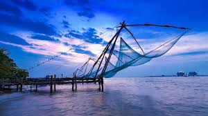
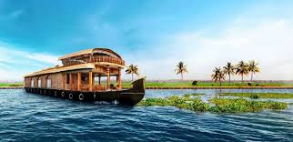
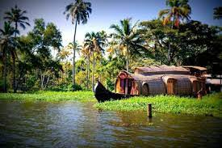

Let's Got To COCHIN





4-Day Travel Schedule – Cochin (Kochi)
Day 1 – Arrival & Local Exploration
- Arrive in Kochi and check into hotel
- Visit Fort Kochi and see the Chinese Fishing Nets
- Walk around Jew Town & Mattancherry Palace
- Evening Kathakali dance show
Day 2 – Heritage And Culture
- St. Francis Church (oldest European church in India)
- Santa Cruz Basilica
- Kerala Folklore Museum
- Marine Drive in the evening
Day 3 –Backwaters and Nature
- Day trip to Alleppey (houseboat or backwater cruise)
- Enjoy Kerala cuisine on the boat
- Return to Kochi by evening
Day 4 – Leisure & Return
- Morning visit to Hill Palace Museum
- Shopping for spices, handicrafts, and souvenirs
- Relax at Cherai Beach (if time permits)
- Departure
Breakfast
- Puttu & Kadala Curry
- Appam with Stew (Vegetable/Chicken)
- Idiyappam with Egg Curry
Lunch
- Kerala Sadya (served on banana leaf)
- Karimeen Pollichathu (Pearl Spot fish in banana leaf)
- Malabar Chicken Biryani
Snacks
- Banana Chips
- Parippu Vada (Dal fritters)
- Pazham Pori (Banana fritters)
Dinner
- Fish Curry with Kerala Red Rice
- Porotta with Beef Fry
- Vegetable Avial with Rice
Desserts & Drinks
- Payasam (Traditional sweet dish)
- Tender Coconut Water
- Filter Coffee